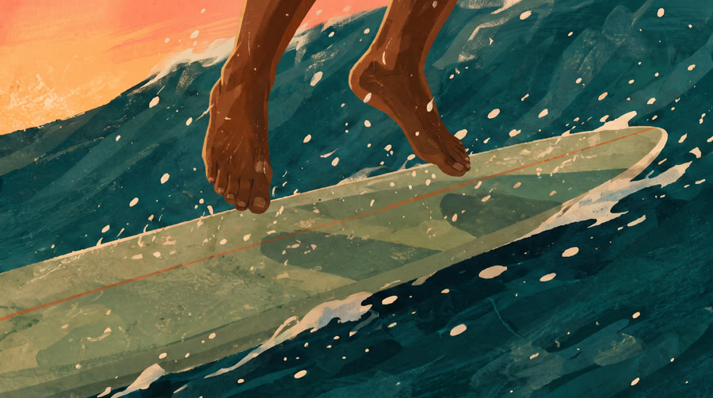
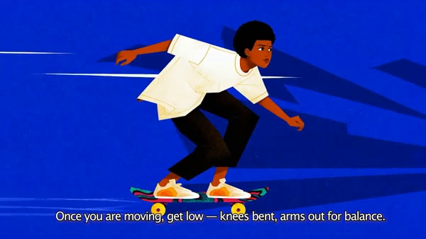
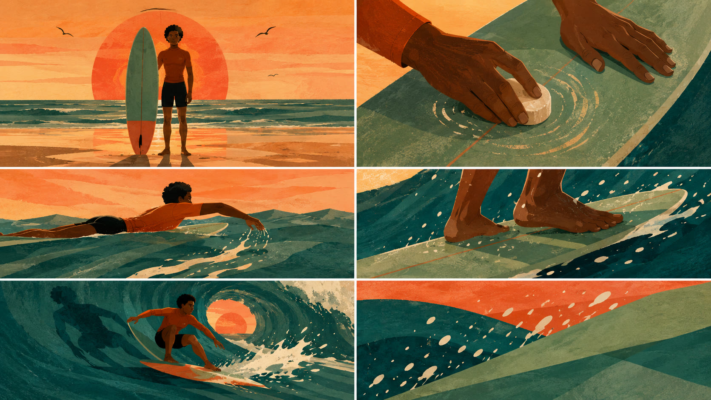
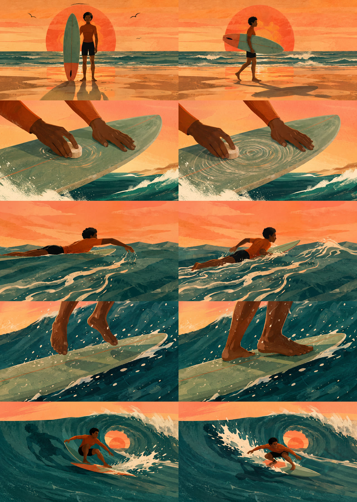
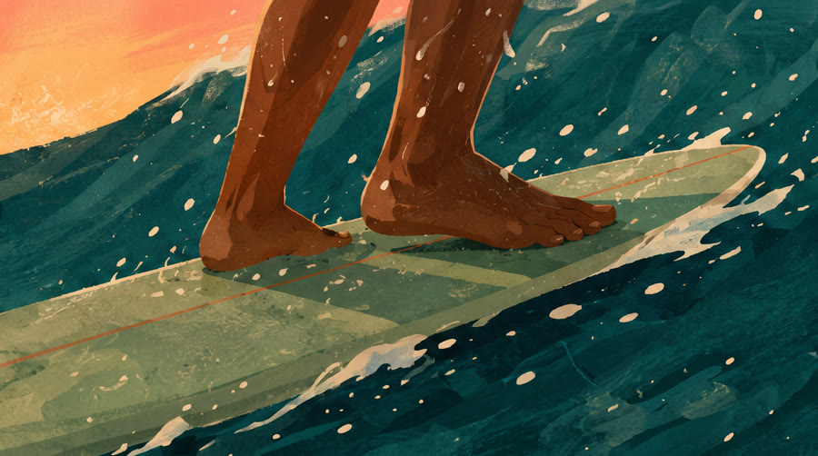

Case Study · Episode 13 · Reference-to-Remake Pipeline
SO YOU WANT TO LEARN TO SURF: one reference, a whole new wave
Start from someone else's finished film — a 16-second illustrated skateboarding tutorial — and remake its soul in a new world: same editorial gouache language, new palette, new sport, new motion. A single GPT-Image grid became moodboard and storyboard; Nano Banana Pro locked ten keyframes; Seedance animated between them, first frame to last. Every pixel generated through one API hub, finished with real type and a real mix in Remotion. Five shots, five spoken lines, twenty seconds.
The finished film · five shots at golden hour — Seedance clips upscaled 2× through
Topaz, subtitles and voiceover timed to a hand-made edit, scored with "Salted Cedar."
Overview
Gate every dollar behind an approval
The economics wrote the process: images cost cents, video clips cost real money. So the pipeline is a staircase of cheap approvals — style brief, moodboard, storyboard, keyframes — and the expensive video model runs only when the exact first and last frame of every shot is already signed off. Nothing left to gamble on but motion.
1Reference film studied
6Moodboard panels · one grid
10Locked keyframes
5Seedance clips
2×Topaz upscale to 1440p
The Pipeline
Step by step
01
The Reference
The brief began with someone else's film: a 16-second illustrated skateboarding tutorial — flat painterly gouache, a character in an oversized white tee on a cobalt field, dashed speed lines, a jagged graphic shadow, a subtitle bar carrying the narration. Frames were extracted and studied for what actually made the look: bold flat shapes, paper texture, no outlines, and a shot grammar of wide → close-up → extreme close-up → rolling profile.
The remake kept the language and changed everything else: skateboarding became surfing, cobalt became a golden-hour palette — deep teal-emerald ocean, apricot-coral sky — and the speed lines became spray. The style description was written once and pasted verbatim into every image and motion prompt after; repetition is what keeps twenty generations looking like one film.
ffmpeg frame extraction One reusable style block
Fig. 1 — the reference: editorial illustration, graphic motion devices,
narration in a subtitle bar. The remake borrows the grammar, not the pixels.
02
The Moodboard That Became the Storyboard
GPT-Image took the style block and six panel prompts and returned one grid so coherent it collapsed two pipeline stages: the five narrative panels mapped one-to-one onto the planned beats — intro on the beach, waxing the board, paddling out, the pop-up, the hero carve — plus an abstract palette study that later became the film's end card.
Instead of a second storyboard round, the grid was approved as-is and sliced into panels with ffmpeg. Each panel became the canonical reference for its shot: the character bible, the palette bible and the composition bible in one image.
GPT-Image · exploration Six panels · one generation
Fig. 2 — the grid that did two jobs. Five story panels and a texture study,
consistent character and palette in a single GPT-Image generation.
03
The Keyframes
Seedance's first-and-last-frame mode is the single biggest lever on AI motion quality — it pins both ends of every clip and leaves the model nothing to drift toward. That means ten keyframes for five shots. Nano Banana Pro regenerated each approved panel as a full-bleed 16:9 "anchor," then edited each anchor into its partner frame — pose progressed, spray bigger, wax swirls spread — with everything else held identical.
Two anchors drifted on the first pass — the model moved the intro character into the water, and zoomed the pop-up out to a full body. Both were retaken with CRITICAL-prefixed constraints rather than accepted: keyframe errors multiply once they reach video.
Nano Banana Pro · 2K Anchor → partner chaining
Fig. 3 — the ten-frame contact sheet sent for approval: left column first frames,
right column last frames, one row per shot.
Pop-up · first frame: feet in the air

Pop-up · last frame: the landing
Fig. 4 — the reversed-anchor trick: the approved panel became the landing,
and a hovering-feet variant was generated as the start — so Seedance animates the impact, not the wind-up.
04
The Motion
One motion prompt per shot, all built the same way: style declaration first, then subject motion, then secondary motion — fabric, foam, seabirds — then the camera, then the guards: no morphing, character stays on-model, painterly texture preserved. Clips were generated at 720p, half the cost of native 1080p; for flat illustrated art the resolution comes back for free at the upscale stage, and the savings buy retakes.
The generations taught their own lesson: contained motion — waxing, paddling, carving — came back clean, while invented locomotion produced a shadow that walked by itself. The cut, not the prompt, fixed it: a 5-second take usually holds 2–3 clean seconds, and the human edit kept exactly those.
Seedance · first+last frame 720p · retakes over resolutionMotion prompt (abridged) — the hero carve
Flat gouache editorial illustration animation, smooth 2D feel. Wide hero shot: the surfer carves down the face of a huge stylized curling wave and drops deeper into the barrel, crouching lower with arms spread for balance; spray explodes off the tail in sharp paper-cut cream shapes, the bold graphic shadow slides across the teal wave face, the coral sun glows through the translucent lip … slight slow camera push-in … no morphing, character stays on-model, painterly texture preserved.
Fig. 5 — style first, motion in the middle, guards at the end. The keyframes own
the composition; the prompt only choreographs the change.
05
The Sound
The reference's subtitle bar implied a voice, so the remake got one: five short lines — "So you want to learn to surf" through "Get low… and let the wave carry you" — generated in ElevenLabs as five separate files, one per line, so each read could be snapped to its exact cut. When two reads collided at the fastest cut, one simply started early: in a quick edit, audio leads picture.
The bed is a Suno instrumental — warm nylon guitar and soft hand percussion, "Salted Cedar" — ducked under the voice at 18% and faded out with the end card.
ElevenLabs · line per file Suno · instrumental bedThe whole script
S1 — So you want to learn to surf.
S2 — First — wax your board.
S3 — Paddle out past the break.
S4 — Pop up — front foot over the stringer.
S5 — Get low… and let the wave carry you.
Fig. 6 — twenty-two words of narration. Tutorial films are written in beats,
not paragraphs.
06
The Finish
After picture lock the cut went through Topaz — hosted on the same API hub as everything else — for a 2× upscale to 2560×1440; flat gouache shapes upscale essentially losslessly. Then Remotion did what generative models cannot: real type. The subtitle bar, timed to measured cut points, and the end card set on the moodboard's texture panel — plus the full audio mix of five voice lines and the music bed.
The last battle was a subtle frame-to-frame shimmer in the render. Measured, not guessed: the plate's inter-frame noise was 9.47, the rendered file's was 17.38 — the renderer's per-frame JPEG capture was adding visible noise to textured art. The endgame: Remotion renders only the overlay — text and audio on a transparent alpha track — and ffmpeg composites it over the untouched plate in a single encode. Plate pixels, exactly once through a codec.
Topaz · 2× to 1440p Alpha overlay + one encodeThe composite, in one move
ffmpeg -i plate.mp4 -i overlay.mov # ProRes 4444 + alpha, from Remotion
-filter_complex "[0:v]…tpad[base];
[base][1:v]overlay[v]"
-map "[v]" -map 1:a -crf 16 final.mp4
Fig. 7 — the overlay carries the type and the whole mix; the plate is never
re-captured. Flicker: gone by construction.
The Cut
Five beats, one lesson each
The edit is human — cut in a phone editor from the five raw clips, trimming around what the models got wrong and keeping what they got right. Subtitles and voice were then timed to the measured cuts, crossfades and all.
| TC | Shot | Beat | Framing | Dur. |
|---|---|---|---|---|
| 0:00 | S1 · The invitation | On the sand, board planted, sun huge behind | WS | 2.7s |
| 0:02 | S2 · Wax your board | Circular strokes, swirls spreading on the deck | ECU | 4.8s |
| 0:07 | S3 · Paddle out | Foam ribbons off the fingertips, swell ahead | WS · water level | 5.0s |
| 0:12 | S4 · The pop-up | Feet hover, then land across the stringer | ECU | 2.3s |
| 0:14 | S5 · Let it carry you | Low crouch into the barrel, sun through the lip | EWS → push-in | 2.7s |
| 0:17 | End card | "Now paddle out." on the texture study | Card | 2.5s |
The pacing argument — the two instructional close-ups get the
time; the hero shots stay short and leave you wanting the wave back. Tutorials earn style by being useful
first.
The Footage
Raw clips, straight from the engine
Ungraded 720p Seedance generations, before Topaz and before the edit — each animated between its two locked keyframes with a motion-only prompt.
The wax · shot S2
The paddle · shot S3
The carve · shot S5
Worth pausing on — the foam. Water is where generative video
is at its best, and the flat paper-cut style hides the physics sins that would expose a photoreal render.
Behind the Scenes
What we learned (and what nearly broke)
The honest notes — six lessons this film paid for.
Approve before you spend
Images cost cents; clips cost ~250 credits each. The staircase of approvals — brief, moodboard, keyframe contact sheet — meant the expensive model never ran on an unapproved idea. The one time the account hit zero, it was mid-batch: the balance went negative and queued tasks failed with unhelpful 500s. Check the balance before every batch.
Reverse the keyframe
For an impact beat, make the approved frame the ending. The pop-up's panel became the landing; a hovering-feet variant became the start. The model animated the satisfying half of the motion instead of inventing an approach it would have fumbled.
Models invent locomotion
Asked to walk a character across a beach, Seedance produced a shadow strolling on its own and a surfer moon-walking backwards. Contained motion — waxing, paddling, carving — came back clean every time. Keep travel beats static or short, and let the edit do the walking.
HTTP 200 is not success
The API hub returns errors inside successful HTTP
responses — {"code": 422} in a 200 body — and a required voice parameter documented as optional.
Surface the app-level code on every call or you'll debug data: null crashes instead of reading
"voiceId cannot be empty."
Chase flicker with numbers
"It flickers" became measurable: ffmpeg's signalstats put the plate at YDIF 9.47 and the render at 17.38 — the renderer's JPEG frame capture was the noise. The fix wasn't a setting; it was architecture: render only the text overlay with alpha, composite in ffmpeg, and the plate's pixels pass through exactly one encode.
Text is never generative
No AI frame carries a single word. Subtitles, the end card — all real type, rendered by Remotion over the footage. Generative models mangle letterforms, and baked-in text can't be retimed when a human re-edits the cut underneath it.
Toolbox
Everything used, and what it did
Kie.ai
One API hub: images, video, upscale — one key, one billing
One API hub: images, video, upscale — one key, one billing
GPT-Image
The six-panel moodboard-turned-storyboard
The six-panel moodboard-turned-storyboard
Nano Banana Pro
Ten reference-locked keyframes at 2K
Ten reference-locked keyframes at 2K
Seedance
First+last-frame image-to-video, 720p
First+last-frame image-to-video, 720p
Topaz Video Upscale
2× to 2560×1440 after picture lock
2× to 2560×1440 after picture lock
ElevenLabs
Five narration lines, one file per cut
Five narration lines, one file per cut
Suno
"Salted Cedar" — the instrumental bed
"Salted Cedar" — the instrumental bed
Remotion
Real type, timed subtitles, end card, full mix
Real type, timed subtitles, end card, full mix
ffmpeg
Frame forensics, cut detection, the final composite
Frame forensics, cut detection, the final composite
Claude Code
The producer: prompts, pipeline code & this case study
The producer: prompts, pipeline code & this case study